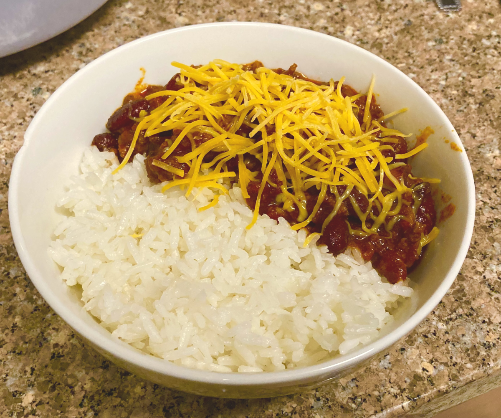

back
chili

ingredients:
- 1lb ground beef
- 1 diced yellow onion
- 10oz can petite diced tomatoes with green chiles
- 29oz can tomato sauce
- 15oz can dark red kidney beans
- 1 pack of chili seasoning (or look up how to make some)
- 2 tbsp of Goya Adobo All-Purpose Seasoning
- 1 packet of Goya Sazon with Coriander and Annatto Seasoning
steps:
- brown the beef on medium-high in a pot. i like to do everything in one pot, but it's up to you. do not break up the meat until the bottom has browned.
- once broken up, add a decent amount of the all-purpose seasoning (not TOO much) and stir it in
- saute the yellow onion with a little oil in a separate pan with a little salt and pepper, then add it to the pot
- drop the heat on the pot to low, then pour in the diced tomatoes, tomato sauce
- drain the can of beans, then add into the pot
- add the chili seasoning and sazon seasoning. stir until properly mixed in.
- let cook on low for about 30 minutes to 1 hour. enjoy. i recommend putting this with buttered rice it is insanely good